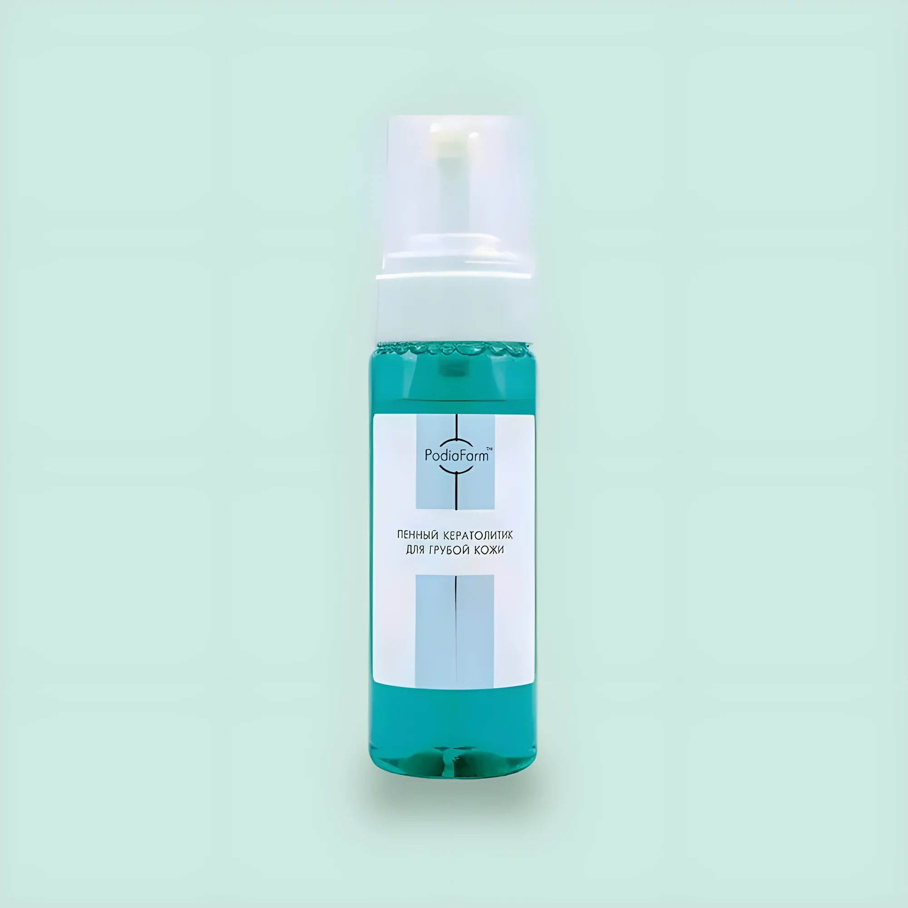

Кератолитики
Гель-кератолитик для точечного применения
Щелочной гель для малотравматичного удаления всех видов мозолей.
Цена уточняется

Пена для быстрого размягчения огрубевшей кожи стоп. Подсушивает потеющие стопы.
Не травмирует живые клетки, пенная форма экономична и равномерно наносится. Карбамид разрушает связи между ороговевшими клетками, глицерин не даёт коже пересыхать.
Нанести средство на салфетку и приложить к стопе. Через 7–15 минут удалить остатки и обработать огрубевшие участки. В конце — тоник-нейтрализатор.
карбамид, глицерин, фарнезол, экстракт шалфея, экстракт подорожника, мягкие ПАВ
Косметическое средство, не лекарство. При симптомах заболевания проконсультируйтесь со специалистом. Описание взято из каталога производителя.
Щелочной гель для малотравматичного удаления всех видов мозолей.
Облегчает удаление кутикулы, не повреждая ноготь и живые клетки.
Перед стрижкой утолщённого ногтя и для облегчения удаления вросшей части.
Быстрое размягчение и подготовка околоногтевой зоны к обработке.